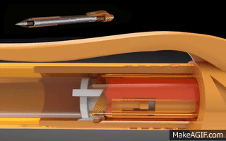
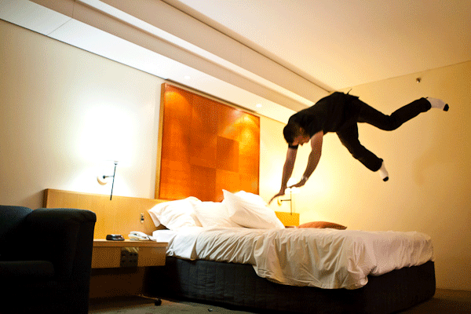
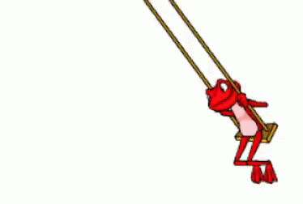
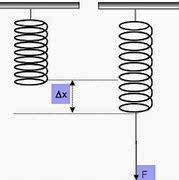

Pendahuluan
Gerak Harmonik Sederhana (GHS) atau Simple Harmonic Oscillation (SHO) memiliki peranan penting dalam kehidupan sehari-hari. Contoh dari penerapan gerak harmonik dalam kehidupan sehari-hari dapat dilihat pada animasi berikut:
Pena pegas memanfaatkan pegas untuk menarik dan memunculkan ujung pena.
Spring bed memanfaatkan pegas supaya permukaan tidak keras sehingga lebih nyaman digunakan.
Ayunan yang bergerak bolak-balik dan berulang merupakan salah satu penerapan prinsip gerak harmonik sederhana.
Harmonik yang artinya bentuk atau pola yang selalu berulang pada waktu tertentu dan sederhana diartikan bahwa gerak tersebut tidak dipengaruhi gaya disipatif atau gaya gesek sehingga benda bergerak secara terus menerus. Pada dasarnya terdapat gerak harmonik yang dipengaruhi oleh gaya disipasi. Akan tetapi pada pembahasan ini hanya menjabarkan mengenai gerak harmonik yang tidak dipengaruhi gaya disipatif (Gerak Harmonik Sederhana). Gaya pembalik adalah salah satu konsep penting dalam fisika yang secara langsung menjadi dasar terjadinya gerak harmonik. Pembahasan mengenai gaya pembalik dijelaskan berdasarkan hukum Hooke. Hukum Hooke menjelaskan gaya yang bekerja pada suatu benda yang mengalami deformasi atau perpindahan dari posisi keseimbangan akan mencoba untuk mengembalikan benda tersebut ke posisi semula. Penjelasan lebih lengkap mengenai Hukum Hooke dijabarkan dibawah ini.
Hukum Hooke
Hukum Hooke merupakan sebuah hukum fisika yang menjelaskan hubungan antara gaya pada suatu benda elastis dan perubahan panjang benda tersebut. Hukum ini ditemukan oleh Robert Hooke pada tahun 1660. Seperti yang telah dijelaskan pada pembahasan elastisitas, bahwa benda elastis memiliki kemampuan untuk kembali pada bentuk awalnya setelah diberikan beban atau dikenai gaya. Salah satu contoh peristiwa elastisitas yaitu pada pegas yang diregangkan atau dimampatkan (Ishaq, 2006). Perhatikan gambar pegas berikut

Berdasarkan gambar diatas, pemberian gaya sebesar F mengakibatkan pegas mengalami pertambahan sebesar ∆x. Besar gaya F berbanding lurus dengan perubahan panjang pegas ∆x. Semakin besar gaya yang diberikan pada pegas maka perubahan panjang juga semakin besar. Secara matematis dapat dituliskan sebagai berikut:
Jika gaya yang deiberikan pada pegas tidak melebihi batas elastisitasnya, maka pegas dapat berfungsi dengan normal. Akan tetapi, Apabila gaya yang diberikan melebihi batas elastisitas pegas maka pegas akan mengalami deformasi permanen dan pegas tidak dapat kembali ke bentuk semula sehingga pegas tidak dapat berfungsi dengan baik. Oleh karena itu, penting untuk memilih pegas yang sesuai untuk kepentingan tertentu dan memastikan bahwa beban yang diterapkan tidak melebihi batas elastisitas pegas tersebut.